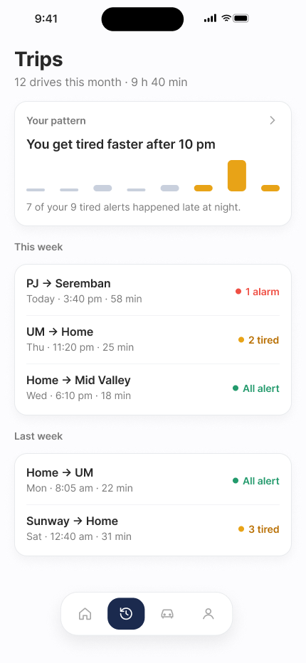
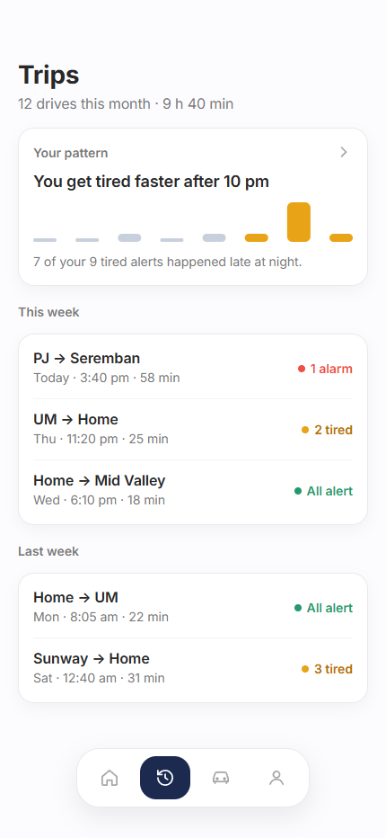
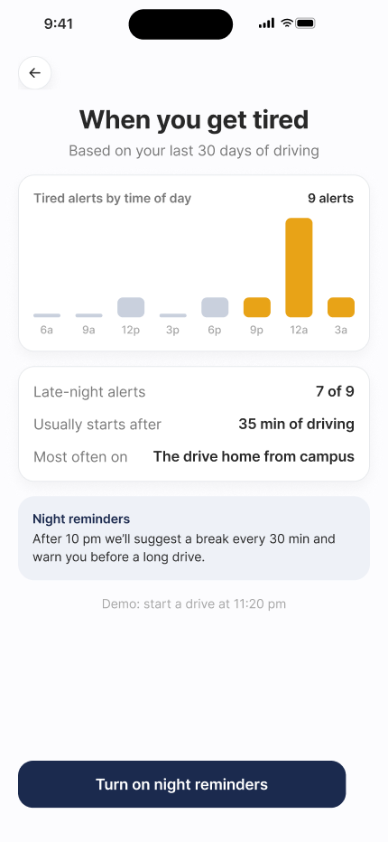
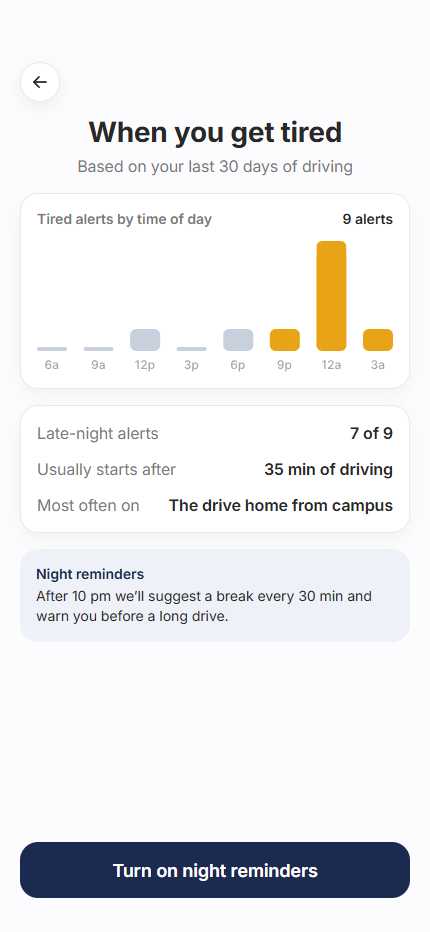
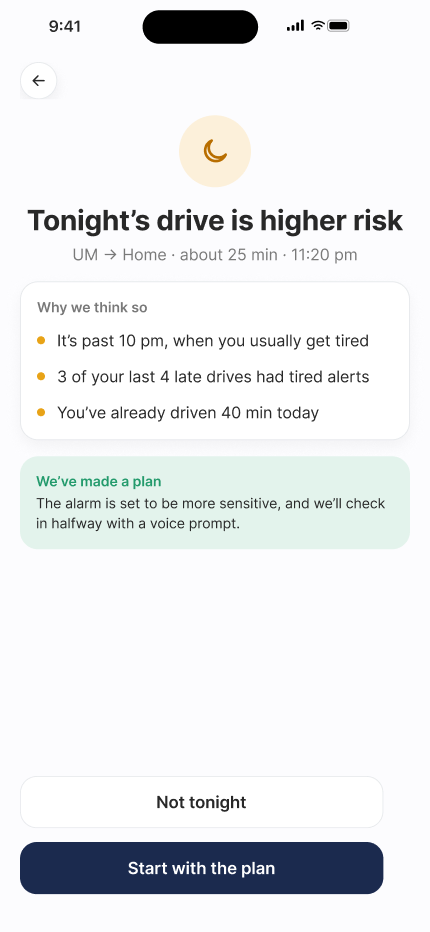
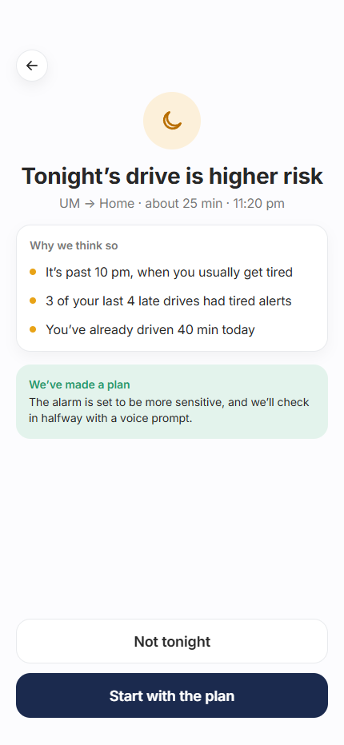

Figma at left; browser rendering at right. Both use 430 × 932 pixels. On a phone, swipe each pair sideways.
The app omits the fake status bar, hides the Demo link and reuses the shared 40px icon buttons, 56px buttons and tab bar. Actions sit 34px above the bottom edge. Text antialiasing can differ from Figma.
Trips, charts and risk reasons use Figma sample values. Night-reminder choice is held for this session; scheduled reminders, risk prediction and the more sensitive alarm come in later phases.
Header at y66; pattern card at y142; five history rows and the shared Trips tab bar.


Original time-of-day chart, facts at y405 and night-reminder panel at y549. The source Demo link lives in the hidden triple-tap-logo panel.


Original moon and bullet SVGs, 72px icon, reasons at y281 and plan at y456. Start with the plan opens Mount your phone.

